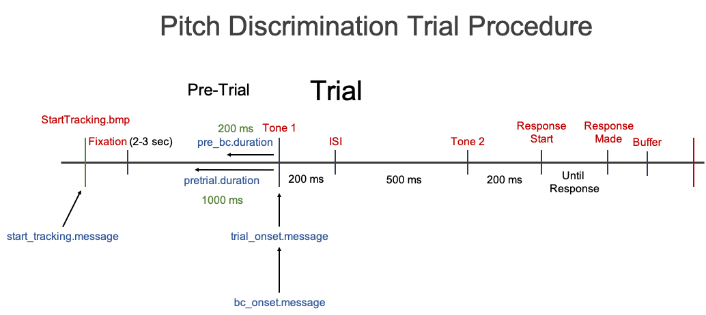

vignettes/pupillometry_functions.Rmd
pupillometry_functions.RmdIf you prefer not to use pupil_preprocess() then you can custom build your own sequence of preprocessing functions. I will provide an example on how to do so in this Article.
We will use the example data provided in the other Articles:
Download the Example Data Set and run the script below
Information about example data set:
Raw Data Filename: “pitch_discrimination_19-1_001 Samples.txt”
Eyetracker: SMI Red250 Mobile recorded at 250 Hz
Contains message markers: Yes
Subject #: 19
Task: Pitch Discrimination
Trial Procedure: Fixation (Pre-trial - 3000 to 2000 ms) -> Tone 1 (200 ms) -> Inter-stimulus Interval (ISI - 500 ms) -> Tone 2 (200 ms) -> Response Screen (Until response)

Let’s start off with building a sequence of preprocessing functions. For the first example, we will include all of the preprocessing steps that are used in pupil_preprocess().
The overall workflow of pupil_preprocess() is:
Read in raw data files pupil_read()
tracking.file is supplied will also add message markers to the dataClean up raw data files and more
Correlate left and right pupil size (if both eyes were recorded from). pupil_cor()
Select either left or right pupil data (if both eyes were recorded from). select_eye()
Set Timing variable to be relative to onset of each trial. set_timing()
Set Stimulus variable from Message Markers. set_stimuli()
De-blink data. pupil_deblink()
Smooth (if specified). pupil_smooth()
Interpolate (if specified). pupil_interpolate()
Baseline Correct (if specified). pupil_baselinecorrect()
Remove trials with too much Missing Data. pupil_missing()
Let’s go over these steps one by one.
data <- pupil_read(file = "data/raw/pitch_discrimination_19-1_001 Samples.txt", eyetracker = "smi", start_tracking.message = "default", start_tracking.match = "exact", subj.prefix = "n_", subj.suffix = "-", timing.file = NULL, subset = "default", trial.exclude = c())
Since we are using most of the default parameter arguments we can shorten it to
data <- pupil_read(file = "data/raw/pitch_discrimination_19-1_001 Samples.txt", eyetracker = "smi", subj.prefix = "n_", subj.suffix = "-")
Because we have data from both left and right eyes we can calculate the correlation between the two eyes with pupil_cor(). After calculating the correlation, we only want to keep one of the eyes for analysis; select_eye().
The values in the Timing column are usually in absolute time from the start of recording. However, data analysis is much easier if the values are in relative time from the start of each Trial. So at every trial onset, Time = 0. We can do this with set_timing().
Data analysis is also easier if instead of relying on message markers (values only at onset or offset of an event), there was a column that had a value for every sample (row) in the data corresponding to what part of the trial that sample is in (e.g. Cue, Target, Fixation, Response, etc.). The function set_stimuli() uses the message markers to do so.
Putting all these steps together would look like
data <- data %>% pupil_cor() %>% select_eye(eye.use = "left") %>% set_timing(trial_onset.message = "Tone 1", match = "exact", ms.conversion = 1000, pre_trial.duration = 1000) %>% set_stimuli()
It is important to make sure that blinks are coded as having missing values, and you may even want to extend the de-blink duration depending on which eyetracker you are using (this is suggested when using EyeLink eyetrackers)
data <- pupil_deblink(data, extend = 100)
You need to be careful about the window size you specify for smoothing. Window size is specified in milliseconds rather than number of samples. Therefore, you should think carefully about what your recording frequency is when specifying the window size.
data <- pupil_smooth(data, type = "hann", window = 500, hz = 250)
You may want to consider setting a maximum gap of missing values that you are comfortable interpolating over. For instance, if a subject has a gap of missing data that covers the entire critical period where you are looking for an effect, then it might be a good idea to make sure data is not interpolated over gaps larger than the critical task period.
data <- pupil_interpolate(data, type = "cubic-spline", maxgap = 750, hz = 250)
This function will create a new column of baseline corrected data called Pupil_Diameter_bc.mm
data <- pupil_baselinecorrect(data, message = "Tone 1", match = "exact", pre.duration = 200, type = "subtractive")
Finally, it can be a good idea to go ahead and remove any trials that have too much missing data even after these preprocessing methods. You can set the criteria of what is too much missing data
data <- pupil_missing(data, missing.allowed = .33)
Putting it all together, we get:
data <- pupil_read(file = "data/raw/pitch_discrimination_19-1_001 Samples.txt", eyetracker = "smi", subj.prefix = "n_", subj.suffix = "-") %>% pupil_cor() %>% select_eye(eye.use = "left") %>% set_timing(trial_onset.message = "Tone 1", match = "exact", ms.conversion = 1000, pre_trial.duration = 1000) %>% set_stimuli() %>% pupil_deblink(extend = 100) %>% pupil_smooth(type = "hann", window = 500, hz = 250) %>% pupil_interpolate(type = "cubic-spline", maxgap = 750, hz = 250) %>% pupil_baselinecorrect(message = "Tone 1", match = "exact", pre.duration = 200, type = "subtractive") %>% pupil_missing(missing.allowed = .33)
In this way you can build your own sequence of preprocessing steps. To leave out a preprocessing method, just leave out the function.
The chunk of code was adequate for performing preprocessing data from one file. To perform this same process for each of your subject data files you just need to put it in a for loop.
library(pupillometry) library(readr) filelist <- list.files(path = "data/raw", pattern = ".txt", full.names = TRUE) for (file in filelist) { data <- pupil_read(file = file, eyetracker = "smi", subj.prefix = "n_", subj.suffix = "-") %>% pupil_cor() %>% select_eye(eye.use = "left") %>% set_timing(trial_onset.message = "Tone 1", match = "exact", ms.conversion = 1000, pre_trial.duration = 1000) %>% set_stimuli() %>% pupil_deblink(extend = 100) %>% pupil_smooth(type = "hann", window = 500, hz = 250) %>% pupil_interpolate(type = "cubic-spline", maxgap = 750, hz = 250) %>% pupil_baselinecorrect(message = "Tone 1", match = "exact", pre.duration = 200, type = "subtractive") %>% pupil_missing(missing.allowed = .33) subj <- data$Subject[1] SaveAs <- paste("data/preprocessed/PitchDiscrimination_", subj, "_PupilData_smoothed.interpolated.bc.csv", sep = "") write_csv(data, SaveAs) }
If you want to then create a single merged file you can add at the end (outside of the for loop):
pupil_merge(path = "data", pattern = "bc.csv", output.file = "PitchDiscrimination_PupilData.csv")
However, this may not be possible depending on your sample frequency (hz) and number of participants. This is because it may exceed the storage limits of R and possibly your computer.